Games
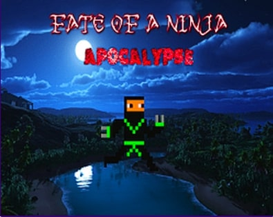Fate of a Ninja: Apocalypse
Books
How To Bitcoin
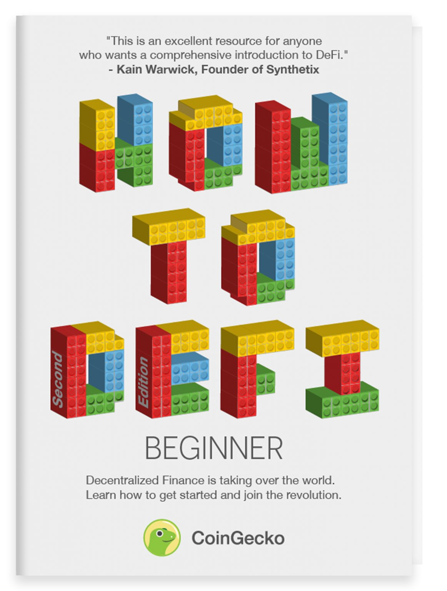How To Defi:
Beginner
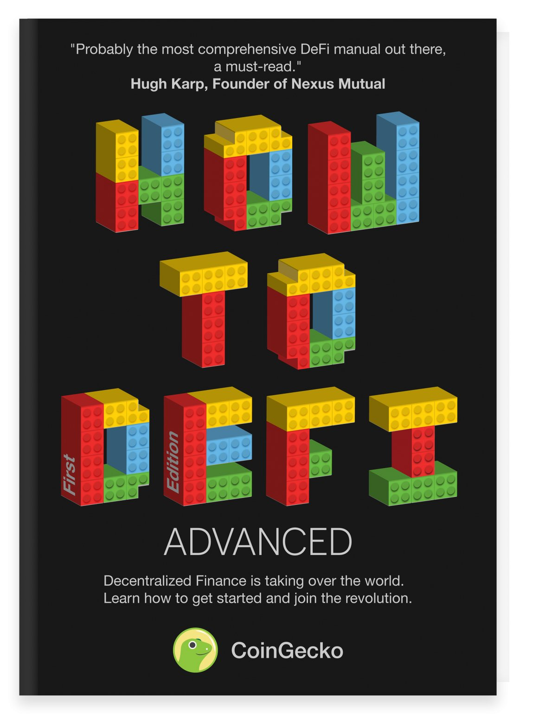How To Defi:
Advanced
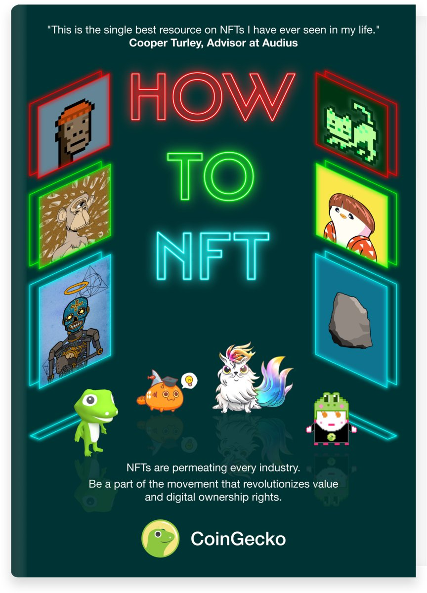How To NFT
Articles
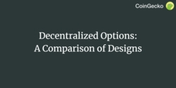Decentralized Options:
A Comparison of Designs
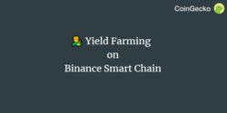Yield Farming on
Binance Smart Chain
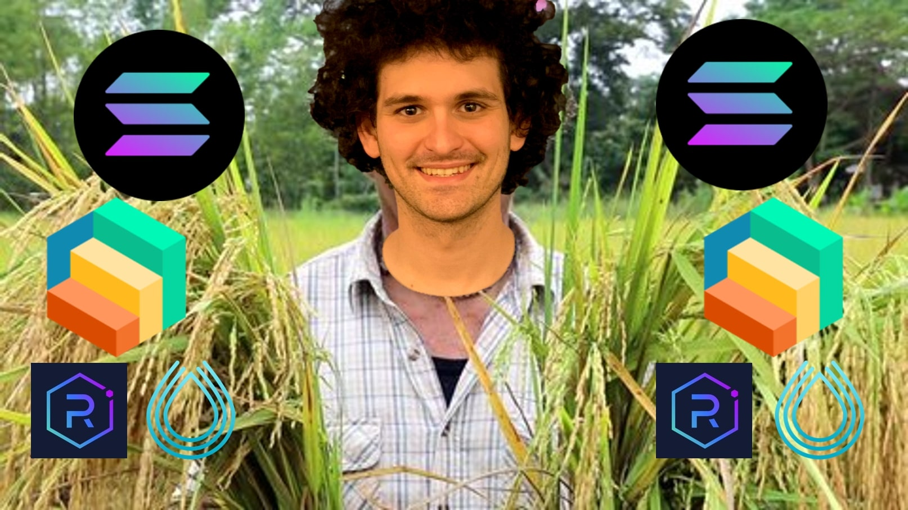Yield Farming
on Solana
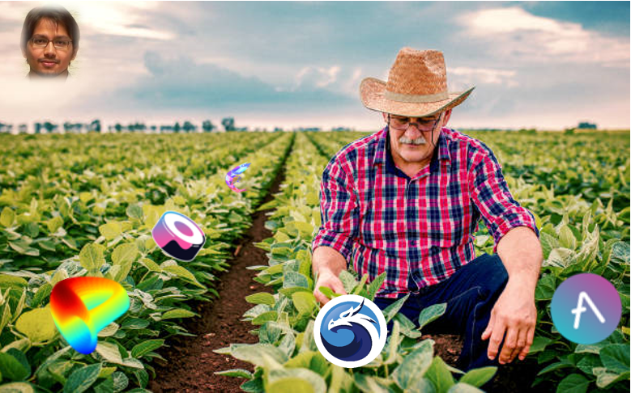Yield Farming
on Polygon
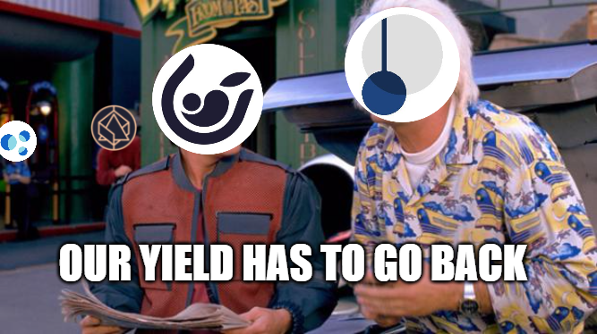Tokenizing
Future Yield
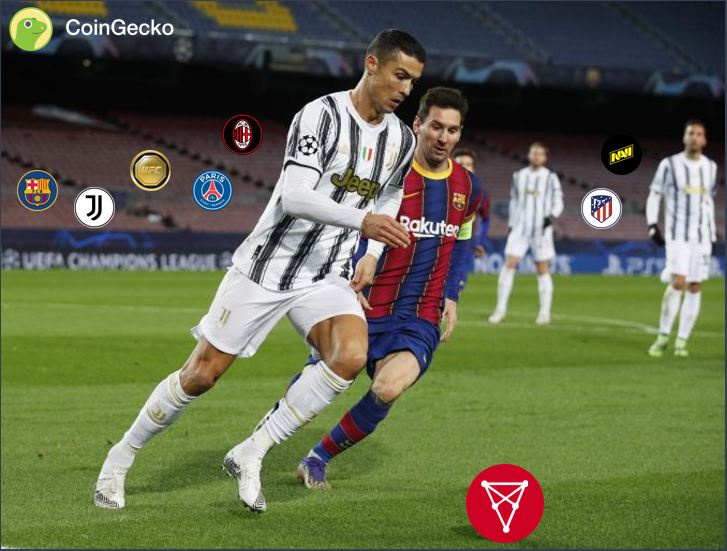Chiliz - Bringing Power
Back To The Fans
Play-to-Earn: A Study
on Scholarship Viability
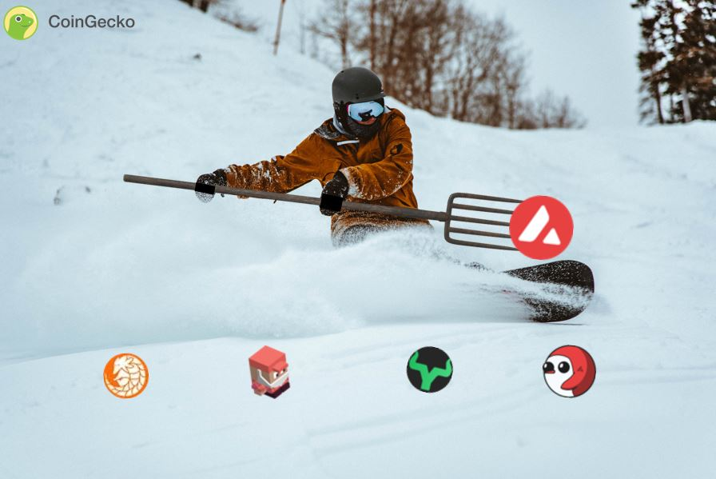Yield Farming on
Avalanche
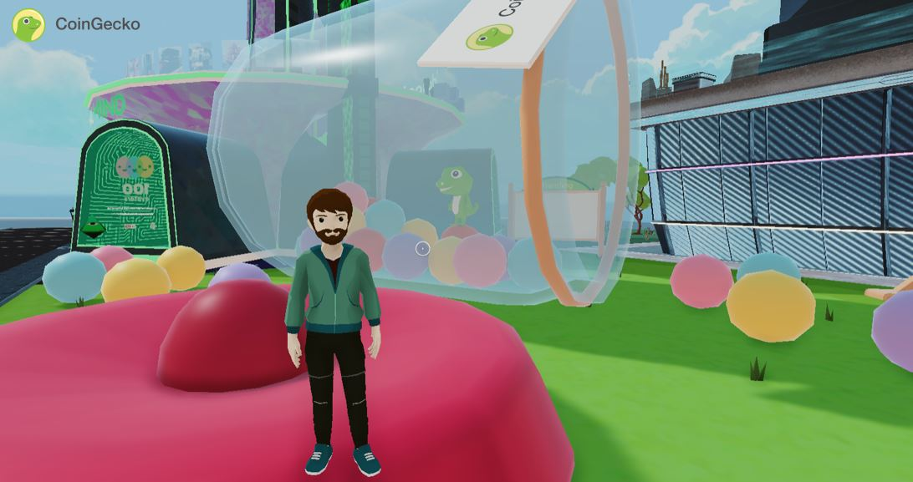How To Get Started
With Decentraland
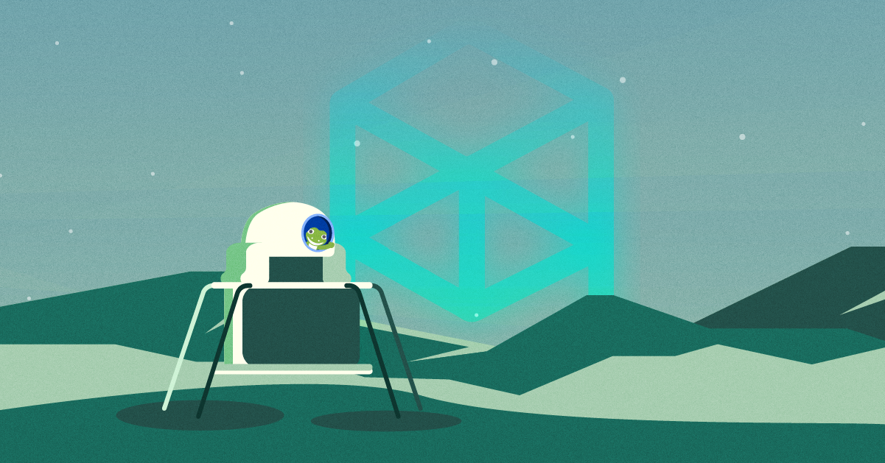Fantom Explained:
Why Is It So Unique
Is Liquidity Drying Up
In The Crypto Markets?
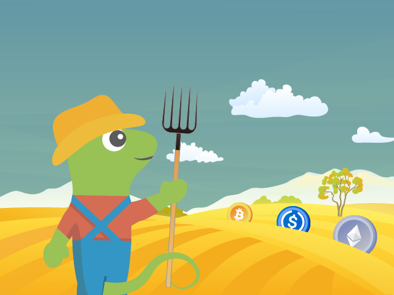What Is APY, APR and
Impermanent Loss
How To Get Early
Access to NFT Drops
 What's Going On
What's Going On
In Aave V3?
Hedging and
Delta-Neutral Strategies
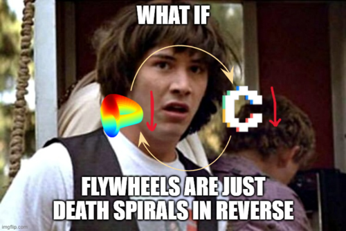The Curve
Wars
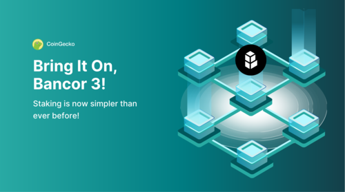Bring It On,
Bancor 3!
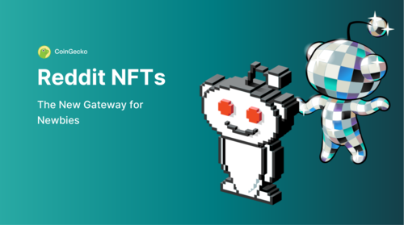Reddit NFTs
Gateway for Newbies
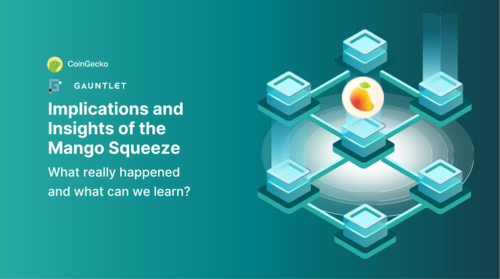The Mango
Squeeze
MetaMask's Latest
Privacy Update
The Beginner's
Guide to MEV
Reports
Decentralized
Storage
ETH Liquid
Staking
Decentralized
Perpetuals
GameFi
RWAs
State of
Stablecoins